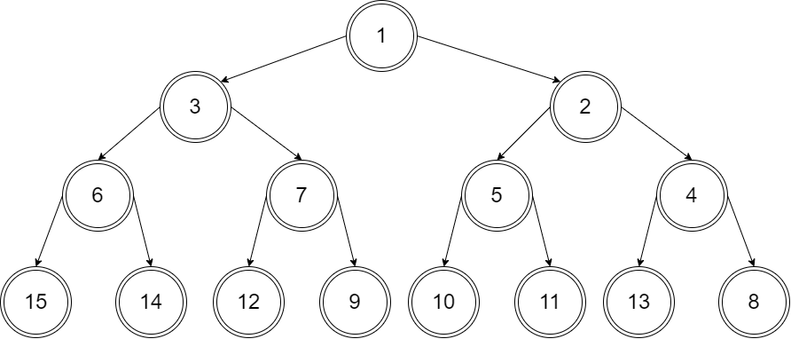
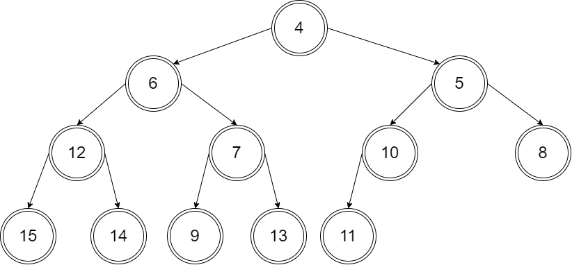
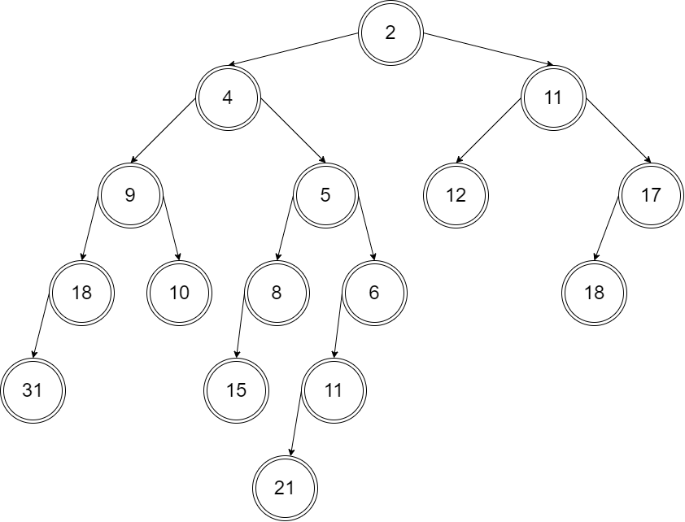
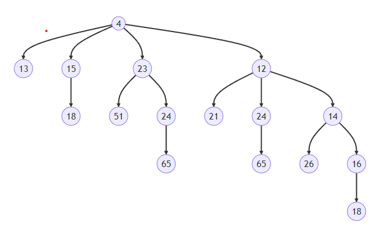

CH6 课后习题
6.2
a answer

b answer

6.3
a answer

b answer

6.2 and 6.3 code
binaryHeap.hpp
// binaryHeap.hpp #ifndef BINARY_HEAP_H #define BINARY_HEAP_H #include <vector> #include <iostream> using namespace std; template <typename Comparable> class BinaryHeap { public: explicit BinaryHeap(int capacity = 100); explicit BinaryHeap(const vector<Comparable> & items); bool isEmpty() const; const Comparable & findMin() const; void insert(const Comparable & x); void insert(Comparable && x); void deleteMin(); void deleteMin(Comparable & minItem); void makeEmpty(); void showHeap() const { int j = 1; for (int i = 1; i <= currentSize; ++i) { cout << array[i]; if (i == j) { cout << endl; j = j * 2 + 1; } else cout << " "; } cout << endl; } private: int currentSize; // Number of elements in heap vector<Comparable> array; // The heap array void buildHeap(); void percolateDown(int hole); }; template <typename Comparable> BinaryHeap<Comparable>::BinaryHeap(int capacity) : currentSize(capacity), array(capacity + 1) {} template <typename Comparable> BinaryHeap<Comparable>::BinaryHeap(const vector<Comparable> & items) : currentSize{items.size()}, array(items.size() + 10) { for (int i = 0; i < items.size(); ++i) array[i + 1] = items[i]; buildHeap(); } template <typename Comparable> void BinaryHeap<Comparable>::buildHeap() { for (int i = currentSize / 2; i > 0; --i) percolateDown(i); } template <typename Comparable> bool BinaryHeap<Comparable>::isEmpty() const { return currentSize == 0; } template <typename Comparable> const Comparable & BinaryHeap<Comparable>::findMin() const { if (isEmpty()) // throw UnderflowException{}; return array[0]; return array[1]; } template <typename Comparable> void BinaryHeap<Comparable>::insert(const Comparable & x) { if (currentSize == array.size() - 1) array.resize(array.size() * 2); // Percolate up int hole = ++currentSize; Comparable copy = x; array[0] = std::move(copy); for (; x < array[hole / 2]; hole /= 2) array[hole] = std::move(array[hole / 2]); array[hole] = std::move(array[0]); } template <typename Comparable> void BinaryHeap<Comparable>::insert(Comparable && x) { if (currentSize == array.size() - 1) array.resize(array.size() * 2); // Percolate up int hole = ++currentSize; for (; hole > 1 && x < array[hole / 2]; hole /= 2) array[hole] = std::move(array[hole / 2]); array[hole] = std::move(x); } template <typename Comparable> void BinaryHeap<Comparable>::deleteMin() { if (isEmpty()) // throw UnderflowException{}; return; array[1] = std::move(array[currentSize--]); percolateDown(1); } template <typename Comparable> void BinaryHeap<Comparable>::deleteMin(Comparable & minItem) { if (isEmpty()) // throw UnderflowException{}; return; minItem = std::move(array[1]); array[1] = std::move(array[currentSize--]); percolateDown(1); } template <typename Comparable> void BinaryHeap<Comparable>::percolateDown(int hole) { int child; Comparable tmp = std::move(array[hole]); for (; hole*2 <= currentSize; hole = child) { child = hole * 2; if (child != currentSize && array[child + 1] < array[child]) ++child; if (array[child] < tmp) array[hole] = std::move(array[child]); else break; } array[hole] = std::move(tmp); } template <typename Comparable> void BinaryHeap<Comparable>::makeEmpty() { currentSize = 0; } #endif
main.cpp
// main.cpp #include "binaryHeap.h" #include <iostream> using namespace std; int main() { vector<int> v = { 10, 12, 1, 14, 6, 5, 8, 15, 3, 9, 7, 4, 11, 13, 2 }; // question 6.2 a BinaryHeap<int> bh1; bh1.makeEmpty(); for (int i = 0; i < v.size(); ++i) bh1.insert(v[i]); cout << "question 6.2 a" << endl; bh1.showHeap(); cout << endl; // question 6.2 b BinaryHeap<int> bh2(v); cout << "question 6.2 b" << endl; bh2.showHeap(); cout << endl; // question 6.3 a for (int i = 0; i < 3; ++i) bh1.deleteMin(); cout << "question 6.3 a" << endl; bh1.showHeap(); cout << endl; // question 6.3 b for (int i = 0; i < 3; ++i) bh2.deleteMin(); cout << "question 6.3 b" << endl; bh2.showHeap(); return 0; }
output
# output question 6.2 a 1 3 2 6 7 5 4 15 14 12 9 10 11 13 8 question 6.2 b 1 3 2 12 6 4 8 15 14 9 7 5 11 13 10 question 6.3 a 4 6 5 13 7 10 8 15 14 12 9 11 question 6.3 b 4 6 5 12 7 10 8 15 14 9 13 11
6.19
answer

6.19 code
leftistHeap.hpp
// leftistHeap.hpp #ifndef LISTISTHEAP_H #define LISTISTHEAP_H #include <iostream> #include <queue> #include <vector> #include <cmath> #include "dsexceptions.h" using namespace std; template <typename Comparable> class LeftistHeap { private: struct LeftistNode { Comparable element; LeftistNode *left; LeftistNode *right; int npl; LeftistNode(const Comparable & e, LeftistNode *lt = nullptr, LeftistNode *rt = nullptr, int np = 0) : element{e}, left{lt}, right{rt}, npl{np} { } LeftistNode(Comparable && e, LeftistNode *lt = nullptr, LeftistNode *rt = nullptr, int np = 0) : element{std::move(e)}, left{lt}, right{rt}, npl{np} { } }; LeftistNode *root; public: LeftistHeap( ) : root { nullptr } { } LeftistHeap(const LeftistHeap & rhs) : root { nullptr } { root = clone(rhs.root); } LeftistHeap(LeftistHeap && rhs) : root { rhs.root } { rhs.root = nullptr; } ~LeftistHeap( ) { makeEmpty( ); } LeftistHeap & operator=(const LeftistHeap & rhs) { LeftistHeap copy = rhs; std::swap(*this, copy); return *this; } LeftistHeap & operator=(LeftistHeap && rhs) { std::swap(root, rhs.root); return *this; } bool isEmpty( ) const { return root == nullptr; } const Comparable & findMin( ) const { if (isEmpty( )) throw UnderflowException { }; return root->element; } void insert(const Comparable & x) { root = merge( new LeftistNode { x }, root ); } void insert(Comparable && x) { root = merge( new LeftistNode { std::move(x) }, root ); } void deleteMin( ) { if (isEmpty( )) throw UnderflowException { }; LeftistNode *oldRoot = root; root = merge(root->left, root->right); delete oldRoot; } void deleteMin(Comparable & minItem) { minItem = findMin( ); deleteMin( ); } void makeEmpty( ) { reclaimMemory(root); root = nullptr; } void merge(LeftistHeap & rhs) { if (this == &rhs) return ; root = merge(root, rhs.root); rhs.root = nullptr; } void show() { vector<Comparable> array; array.resize(1); change2array(array, root, 0); int count = 0; int level = 0; for (int i = 0; i < array.size(); i++) { if (array[i] != 0) { cout << array[i] << " "; count++; } else { cout << ". "; count++; } if (count == pow(2, level)) { cout << endl; count = 0; level++; } } } void change2array(vector<Comparable> & array, LeftistNode *t, int index) { if (t != nullptr) { array[index] = t->element; if (array.size() < 2 * index + 2) array.resize(2 * array.size() + 1); change2array(array, t->left, 2 * index + 1); change2array(array, t->right, 2 * index + 2); } } private: LeftistNode * merge(LeftistNode *h1, LeftistNode *h2) { if (h1 == nullptr) return h2; if (h2 == nullptr) return h1; if (h1->element < h2->element) return merge1(h1, h2); else return merge1(h2, h1); } LeftistNode * merge1(LeftistNode *h1, LeftistNode *h2) { if (h1->left == nullptr) h1->left = h2; else { h1->right = merge(h1->right, h2); if (h1->left->npl < h1->right->npl) swapChildren(h1); h1->npl = h1->right->npl + 1; } return h1; } void swapChildren(LeftistNode *t) { LeftistNode *tmp = t->left; t->left = t->right; t->right = tmp; } void reclaimMemory(LeftistNode *t) { if (t != nullptr) { reclaimMemory(t->left); reclaimMemory(t->right); delete t; } } LeftistNode * clone(LeftistNode *t) const { if (t == nullptr) return nullptr; else return new LeftistNode { t->element, clone(t->left), clone(t->right), t->npl }; } }; #endif
main.cpp
// main.cpp #include "leftistHeap.hpp" #include <iostream> using namespace std; int main() { LeftistHeap<int> h1; LeftistHeap<int> left; LeftistHeap<int> mid; LeftistHeap<int> right; LeftistHeap<int> tmp_l; LeftistHeap<int> tmp_r; left.insert(12); mid.insert(11); mid.merge(left); tmp_l = mid; left.makeEmpty(); mid.makeEmpty(); right.makeEmpty(); left.insert(18); mid.insert(17); mid.merge(left); right = mid; tmp_l.merge(right); left.makeEmpty(); mid.makeEmpty(); right.makeEmpty(); mid.insert(2); left = tmp_l; mid.merge(left); tmp_l = mid; left.makeEmpty(); mid.makeEmpty(); right.makeEmpty(); mid.insert(8); left.insert(15); mid.merge(left); tmp_r = mid; left.makeEmpty(); mid.makeEmpty(); right.makeEmpty(); mid.insert(5); left = tmp_r; mid.merge(left); tmp_r = mid; left.makeEmpty(); mid.makeEmpty(); right.makeEmpty(); mid = tmp_l; right = tmp_r; mid.merge(right); h1 = mid; cout << "h1: " << endl; h1.show(); cout << endl; LeftistHeap<int> h2; left.makeEmpty(); mid.makeEmpty(); right.makeEmpty(); tmp_l.makeEmpty(); tmp_r.makeEmpty(); left.insert(31); mid.insert(18); mid.merge(left); tmp_l = mid; left.makeEmpty(); mid.makeEmpty(); right.makeEmpty(); mid.insert(9); left = tmp_l; mid.merge(left); tmp_l = mid; left.makeEmpty(); mid.makeEmpty(); right.makeEmpty(); mid.insert(10); right = mid; tmp_l.merge(right); left.makeEmpty(); mid.makeEmpty(); right.makeEmpty(); mid.insert(4); left = tmp_l; mid.merge(left); tmp_l = mid; left.makeEmpty(); mid.makeEmpty(); right.makeEmpty(); mid.insert(11); left.insert(21); mid.merge(left); tmp_r = mid; left.makeEmpty(); mid.makeEmpty(); right.makeEmpty(); mid.insert(6); left = tmp_r; mid.merge(left); tmp_r = mid; tmp_l.merge(tmp_r); h2 = tmp_l; cout << "h2: " << endl; h2.show(); cout << endl; cout << "h1.merge(h2): " << endl; h1.merge(h2); h1.show(); return 0; }
output
# output h1: 2 11 5 12 17 8 . . . 18 . 15 . . . . . . . . . . . . . . . . . . . h2: 4 9 6 18 10 11 . 31 . . . 21 . . . . . . . . . . . . . . . . . . . h1.merge(h2): 2 4 11 9 5 12 17 18 10 8 6 . . 18 . 31 . . . 15 . 11 . . . . . . . . . . . . . . . . . . . . . 21 . . . . . . . . . . . . . . . . . . . . . . . . . . . . . . . . . . . . . . . . . . . . . . . . . . . . . . . . . . . . . . . . . . . . . . . . . . . . . . . . . . .
6.32
answer

6.32 Code
binomialQueue.hpp
// binomialQueue.hpp #ifndef _BINOMIAL_QUEUE_H #define _BINOMIAL_QUEUE_H #include <iostream> #include <vector> #include <queue> #include "dsexceptions.h" using namespace std; template <typename Comparable> class BinomialQueue { public: BinomialQueue( ) : theTrees( DEFAULT_TREES ), currentSize { 0 } { } BinomialQueue( const Comparable & item ) : theTrees( 1 ), currentSize{ 1 } { theTrees[ 0 ] = new BinomialNode{ item, nullptr, nullptr }; } BinomialQueue( const BinomialQueue & rhs ) : theTrees( rhs.theTrees.size( ) ), currentSize{ rhs.currentSize } { for ( int i = 0; i < rhs.theTrees.size( ); ++i ) theTrees[ i ] = clone( rhs.theTrees[ i ] ); } BinomialQueue( BinomialQueue && rhs ) : theTrees{ std::move( rhs.theTrees ) }, currentSize{ rhs.currentSize } { } ~BinomialQueue( ) { makeEmpty( ); } BinomialQueue & operator=( const BinomialQueue & rhs ) { BinomialQueue copy = rhs; std::swap( *this, copy ); return *this; } BinomialQueue & operator=( BinomialQueue && rhs ) { std::swap( currentSize, rhs.currentSize ); std::swap( theTrees, rhs.theTrees ); return *this; } bool isEmpt( ) const { return currentSize == 0; } const Comparable & findMin( ) const { if ( isEmpt( ) ) throw UnderflowException{ }; return theTrees[ findMinIndex( ) ]->element; } void insert( const Comparable & x ) { BinomialQueue oneItem{ x }; merge( oneItem ); } void insert( Comparable && x ) { BinomialQueue oneItem{ std::move( x ) }; merge( oneItem ); } void deleteMin( ) { Comparable x; deleteMin( x ); } void deleteMin( Comparable & minItem ) { if ( isEmpt( ) ) throw UnderflowException{ }; int minIndex = findMinIndex( ); minItem = theTrees[ minIndex ]->element; BinomialNode *oldRoot = theTrees[ minIndex ]; BinomialNode *deletedTree = oldRoot->leftChild; delete oldRoot; // Construct H'' BinomialQueue deletedQueue; deletedQueue.theTrees.resize( minIndex + 1 ); deletedQueue.currentSize = ( 1 << minIndex ) - 1; for ( int j = minIndex - 1; j >= 0; --j ) { deletedQueue.theTrees[ j ] = deletedTree; deletedTree = deletedTree->nextSibling; deletedQueue.theTrees[ j ]->nextSibling = nullptr; } // Construct H' theTrees[ minIndex ] = nullptr; currentSize -= deletedQueue.currentSize + 1; merge( deletedQueue ); } void makeEmpty( ) { currentSize = 0; for ( auto & root : theTrees) makeEmpty( root ); } void merge( BinomialQueue & rhs ) { if ( this == &rhs) // Avoid aliasing problems return ; currentSize += rhs.currentSize; if ( currentSize > capacity( ) ) { int oldNumTrees = theTrees.size( ); int newNumTrees = max( theTrees.size( ), rhs.theTrees.size( ) ) + 1; theTrees.resize( newNumTrees ); for ( int i = oldNumTrees; i < newNumTrees; ++i ) theTrees[ i ] = nullptr; } BinomialNode *carry = nullptr; for ( int i = 0, j = 1; j <= currentSize; ++i, j *= 2 ) { BinomialNode *t1 = theTrees[ i ]; BinomialNode *t2 = i < rhs.theTrees.size( ) ? rhs.theTrees[ i ] : nullptr; int whichCase = t1 == nullptr ? 0 : 1; whichCase += t2 == nullptr ? 0 : 2; whichCase += carry == nullptr ? 0 : 4; switch ( whichCase ) { case 0: /* No trees */ case 1: /* Only this */ break; case 2: /* Only rhs */ theTrees[ i ] = t2; rhs.theTrees[ i ] = nullptr; break; case 4: /* Only carry */ theTrees[ i ] = carry; carry = nullptr; break; case 3: /* this and rhs */ carry = combineTrees( t1, t2 ); theTrees[ i ] = rhs.theTrees[ i ] = nullptr; break; case 5: /* this and carry */ carry = combineTrees( t1, carry ); theTrees[ i ] = nullptr; break; case 6: /* rhs and carry */ carry = combineTrees( t2, carry ); rhs.theTrees[ i ] = nullptr; break; case 7: /* All three */ theTrees[ i ] = carry; carry = combineTrees( t1, t2 ); rhs.theTrees[ i ] = nullptr; break; } } for ( auto & root : rhs.theTrees ) root = nullptr; rhs.currentSize = 0; } void show( ) const { for ( int i = 0; i < theTrees.size( ); ++i ) { if ( theTrees[ i ] != nullptr ) { cout << "Tree " << i << ": " << endl; show( theTrees[ i ], i ); cout << endl; } } } private: struct BinomialNode { Comparable element; BinomialNode *leftChild; BinomialNode *nextSibling; BinomialNode( const Comparable & e, BinomialNode *lt, BinomialNode *rt ) : element{ e }, leftChild{ lt }, nextSibling{ rt } { } BinomialNode( Comparable && e, BinomialNode *lt, BinomialNode *rt ) : element{ std::move( e ) }, leftChild{ lt }, nextSibling{ rt } { } }; const static int DEFAULT_TREES = 1; vector<BinomialNode*> theTrees; // An array of tree roots int currentSize; // Number of items in the priority queue int findMinIndex( ) const { int i; int minIndex; for ( i = 0; theTrees[ i ] == nullptr; ++i ) ; for ( minIndex = i; i < theTrees.size( ); ++i ) if ( theTrees[ i ] != nullptr && theTrees[ i ]->element < theTrees[ minIndex ]->element ) minIndex = i; return minIndex; } int capacity( ) const { return ( 1 << theTrees.size( ) ) - 1; } BinomialNode * combineTrees( BinomialNode *t1, BinomialNode *t2 ) { if ( t2->element < t1->element ) return combineTrees( t2, t1 ); t2->nextSibling = t1->leftChild; t1->leftChild = t2; return t1; } void makeEmpty( BinomialNode * & t ) { if ( t != nullptr ) { makeEmpty( t->leftChild ); makeEmpty( t->nextSibling ); delete t; t = nullptr; } } BinomialNode * clone( BinomialNode *t ) const { if ( t == nullptr ) return nullptr; else return new BinomialNode{ t->element, clone( t->leftChild ), clone( t->nextSibling ) }; } void show( BinomialNode *t, int n ) const { queue<BinomialNode*> q; q.push( t ); int count = 0, level = 0, c = 1; while ( q.empty( ) == false ) { BinomialNode *tmp = q.front( ); q.pop( ); while ( tmp != nullptr) { cout << tmp->element; if ( tmp-> nextSibling != nullptr) cout << " -> "; else cout << " "; if ( tmp->leftChild != nullptr ) q.push( tmp->leftChild ); count += 1; tmp = tmp->nextSibling; } if ( count == c ) { cout << endl; ++level; c = 1; for ( int i = 0; i < level; ++i ) { c *= ( n - i ); c /= ( i + 1 ); } count = 0; } } } }; #endif
main.cpp
// main.cpp #include "binomialQueue.h" #include <iostream> using namespace std; int main() { BinomialQueue<int> b1; // 12 21 24 65 14 26 16 18 23 51 24 65 13 b1.insert(12); b1.insert(21); b1.insert(24); b1.insert(65); b1.insert(14); b1.insert(26); b1.insert(16); b1.insert(18); b1.insert(23); b1.insert(51); b1.insert(24); b1.insert(65); b1.insert(13); cout << "b1: " << endl; b1.show(); cout << endl; BinomialQueue<int> b2; // 2 11 29 55 15 18 4 b2.insert(2); b2.insert(11); b2.insert(29); b2.insert(55); b2.insert(15); b2.insert(18); b2.insert(4); cout << "b2: " << endl; b2.show(); cout << endl; b1.merge(b2); cout << "b1.merge(b2): " << endl; b1.show(); return 0; }
output
# output b1: Tree 0: 13 Tree 2: 23 24 -> 51 65 Tree 3: 12 14 -> 24 -> 21 16 -> 26 65 18 b2: Tree 0: 4 Tree 1: 15 18 Tree 2: 2 29 -> 11 55 b1.merge(b2): Tree 2: 4 15 -> 13 18 Tree 4: 2 12 -> 23 -> 29 -> 11 14 -> 24 -> 21 24 -> 51 55 16 -> 26 65 65 18
6.34 Code
binomialQueue.hpp
// binomialQueue.hpp #include <vector> using namespace std; template <typename Comparable> class BiQueue { private: struct BiqueNode { Comparable element; BiqueNode *lchild = nullptr; BiqueNode *sibling = nullptr; BiqueNode( const Comparable & e ) : element { e } {} BiqueNode( Comparable && e ) : element { move(e) } {} }; vector< BiqueNode* > biQue; BiqueNode * combine(BiqueNode *p, BiqueNode *q) { if (p->element > q->element) return combine(q, p); else { q->sibling = p->lchild; p->lchild = q; } return p; } public: BiqueNode * insert(Comparable v) { BiqueNode * t = new BiqueNode(v); BiqueNode * c = t; if (biQue.empty()) { biQue.push_back(c); return t; } for (size_t i = 0; i <= biQue.size(); ++i) { if (i == biQue.size() - 1) biQue.push_back(nullptr); if (biQue[i] == nullptr) { biQue[i] = c; break; } else { c = combine(c, biQue[i]); biQue[i] = nullptr; } } return t; } };
main.cpp
// main.cpp #include <iostream> #include "binomialQueue.hpp" using namespace std; int main() { // 12 21 24 65 14 26 16 18 23 51 24 65 13 BiQueue<int> bq; bq.insert(12); bq.insert(21); bq.insert(24); bq.insert(65); bq.insert(14); bq.insert(26); bq.insert(16); bq.insert(18); bq.insert(23); bq.insert(51); bq.insert(24); bq.insert(65); bq.insert(13); return 0; }